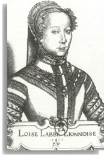

There are three time layers in the text, Labé's 16th century, Scarron's 17th century and Lie's 20th century. Lie borrowed historical figures and poetic content from Labé's time, and narrative structures and attitudes from Scarron's Le roman comique. These elements blend into a contemporary Norwegian woman's diary-like contemplation of how to become an author, a self-confident woman.

Portrait of Louise Labé by Pierre Wöiriot. From Louis Bourgeois' Louise Labé et les poètes lyonnais de son temps. Lyon: Éditions Lyonnaises d'Art et d'Histoire. 1994. Page 12. |
| From insecure observer to lion-hearted hero! |
While the "real" Labé ceased to exist over 400 years ago, the fictional Labé lives and then dies again in the novel. She is resurrected as a friend and mentor for the Norwegian jazzercize student, a woman in search of an authorial and erotic role model. The student is insecure, shy and embarassed by eroticism and wonders how Louise can write so explicitly about longing and desire. Over the course of the novel, the narrator slowly gains authority and corporeality while the character of Louise Labé becomes less important to her and gradually looses strength and then dies. The narrative structures of Løvens hjerte transcend traditional narrative structure and power hierarchies. The "hero" of the novel is not any one of the narrators, but rather the issue of narration and women's authority in literature.
Although she opened the novel as a quiet, unassertive, largely passive figure, the Norwegian woman increases her power significantly. In an attempt to secure a position along the river to watch the king's gondola go by, she is actually able to fight for her position:
(I) seize a coarse dirty lock of hair with one hand and defend myself against blows with the other. I am bigger and stronger and feel a surge of glee because I have the upper hand. But then she twists herself free, lifts her skirts, sits down in front of me and shits.
In a doubly coded moment, both postmodern and burlesque, the text includes graphic details. Similarly, although she begins as a sexually timid woman, easily embarassed by a kiss, she transforms into s sexually self-confident subject:
I partake of him, flatten him down, render him powerless and useless. My velvet cunt can bite... I am possessed with a lust for power, to rule, to trample down and conquer... he clings to me and beseeches me to release him alive, shrieks and begs for more.
|
|